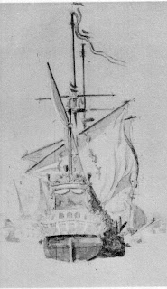
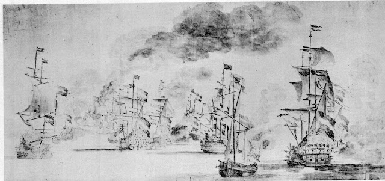

{kind=link}
I showed this photo to a group of ten
year olds at a primary school in Clacton-on-Sea without telling them what it was. I asked them to imagine
they were on their own, aged about twelve, and looking up at it. They
had thirty seconds to look and thirty seconds to jot down words. Then
they were allowed to call them out:
“Dragon – sea lion – exciting –
ugly – fierce – hairy – epic – weird – Elvis Presley hair –
alien – zombie dragon – halloween decoration – statue – fat –
dirty – slimy – red – Chinese dragon”
In fact it's a figurehead from a Dutch
warship, the Stavoren, built in Edam in 1653. She was built
for the Amsterdam Admiralty (each section of the United Provinces
supplied and managed their own fleets) and was probably sponsored by
the town whose name she bore. Pencil sketches made in 1658 show,
indistinctly, that she had a large painting of a town emblazoned
across her stern. The Stavoren was a 48-gun ship with a crew
of 180 men and the exciting, ugly, fierce, zombie dragon with Elvis
Presley hair is actually a red lion, symbol of the United Provinces –
and frequently used on English warships too.
Here's what I wrote, before I consulted
the ten year olds. Luke's aged twelve and this is his first solo
adventure. He's on his way to hospital to visit his father who
has suffered a serious accident in a boatyard on the night of Halloween.(I was so pleased when they included that word!)
Even the long way made him early.
Luke stopped at the main road junction and looked at the pub sign.
He’d passed it in the car plenty of times but he’d never properly
noticed what it was. It was a sort of emblem bolted onto the pub
wall, underneath an overhanging gable and next to a peculiar old
window. Luke crossed the road and got as close underneath as he
could.
It was red all right, crimson as
spilled blood. A red lion with a mane that was painted so deeply
purple you’d think it was black. Wasn’t like any lion’s mane
that Luke had ever seen. It was more like a king’s wig, the sort
they wore in history.
Thick dark curls clustered round the
lion’s eyes. Though you could hardly see eyes from on the ground.
You stared at flaring nostrils, gaping mouth, a pointed tongue and
sharp incisor teeth. Then you noticed claws clutching at a dark
breastplate, and more waves of wooden hair that looked as if they’d
been arranged by some celebrity stylist.
The lion’s heavy torso bulged out
from the pub wall. It was a monster, a crimson king and it was coming
for him. It would have pulled the whole pub with it, if it could.
Luke hoped the fastenings were firm.
Then it sort of tapered, like a
merman or the top half of a seahorse. There was something missing
from this monster. It needed to be able to move. It was like a
captive genie struggling to escape.
The more Luke stared, the more he
felt the carving’s hidden power. He could have battled it on his
Nintendo and that would have been well exciting but today it was like
an encounter with a 100% legend – old and fierce and probably
cruel. It hadn’t even seen that he was there. There were heavy guns
behind the lion and a flash of steel through the smoke. It would ride
him down.
Luke turned away and ran. Re-crossed
the road and took refuge in the brick bus shelter beside the flat
stone bridge.
{kind=link}
Luke has a clue which the Clacton children
didn't have: he knows that it's a lion because he's read the Red Lion
pub sign. Otherwise I think that they were absolutely right to guess
that it could have been a Chinese dragon. Most state primary schools
today manage to make colourful enjoyment out of festivals such as the
Chinese New Year, Diwali or Hanukkah. It may be superficial but it's
fun and it's good education too.
The new children's laureate, Malorie Blackman, was quick to use
the rush of interviews surrounding her appointment this week to insist that we
oppose any political meddling that seeks to dilute multiculturalism
in either in literature or education. Her immediate target was Michael Gove's
proposed curriculum for history.
The
National Curriculum for history aims to ensure that all pupils:
- know and understand the story of these islands: how the British people shaped this nation and how Britain influenced the world.
(Scottish, Irish, Welsh and English readers you can make your way to the comment
box NOW!)
Luke's as yet untitled adventure – and the story of
the Stavoren's red lion now fastened to the wall of a Suffolk
pub – depend upon knowledge of a particular segment of history where
an English king behaved in a morally reprehensible fashion and
lost. It hasn't been taught in the past and I'm guessing that
it's unlikely to feature in the new curriculum either.
 | |
| Stavoren in 1658 by W Van de Velde |
{kind=link}
The Stavoren was part of Admiral
Michiel de Ruyter's United Provinces fleet which surprised and
effectively defeated a combined English and French fleet at the
Battle of Sole Bay off the Suffolk coast in 1672. I went to school in
Suffolk and learned my history the R.J. Unstead way – which I loved
and which is probably the model that Michael Gove, a person of my
generation, secretly yearns to recreate. If I heard at all about the
Battle of Sole Bay I assumed that it was the perfidious Dutch coming
across uninvited to attack we Brits in our own home waters. Nobody
mentioned that this THIRD Anglo-Dutch war (1672-1674) was
deliberately provoked by King Charles II – that cheerful chap with
curly hair and lots of bosomy girlfriends.
When Charles signed the Treaty of
Dover, England was officially allied with the United Provinces and he
seems to have found it quite difficult to dream up any pretext to
declare war on this peaceful, fellow-Protestant country. Eventually
some Dutch ship failed to salute some small English yacht in quite
the approved fashion and that was good enough. A combined
English-French invasion fleet set off across the North Sea to attack
the United Provinces. Admiral de Ruyter, however, was both canny and
a much better seaman that King Charles's brother, James Duke of York
(future King James II) who was in charge of the wannabe invaders. De
Ruyter lurked behind the coastal shoals with his shallow draught
ships, using them to defend his country and, when the English gave up
and went home to re-provision, de Ruyter followed and caught them by
surprise in the early hours of May 28th as they were
anchored off Southwold.
Sole Bay was a bloody battle lasting
all day. About two thousand five hundred men and boys were killed or wounded on either side. Bodies were being washed up along the Suffolk and Essex beaches for weeks afterwards. The Dutch destroyed the newest and biggest English ship –
the 100 gun Royal James (killing
most of her 800 man crew) and the English had to be
content with the relatively elderly 48-gun Stavoren as their
only prize. A ship was a ship however. In the summer of 1673 the
English and French attacked the United Provinces once again. The Stavoren had
been renamed HMS Stavoreen and her red lion figurehead was
sailing against her former countrymen. The English lost three further
battles and in 1674 public opinion forced Charles to make peace. The
Stavoren (or Stavoreen) had been badly damaged at the
Battel of the Texel (August 1673) and in 1682 she was declared
'useless' and sold to the ship-breakers.
How did the Stavoren's
figurehead arrive on the Red Lion pub wall? I wish I knew. It's an
old pub, a coaching inn, probably pre-dating Sole Bay and the lion
has been there for a very long time. “Red as the lion of
Martlesham” has become a Suffolk saying and my best guess is that
it was purchased from the shipbreakers in 1682, perhaps with some
useful timber.
A much more immediate problem is how to
share the history of Sole Bay with readers, especially young readers.
My story's not a historical novel, it's an adventure but the politics
of the past has the power to affect the present. That's why we argue
about the teaching of history. If Luke is to discover that a set of
extreme Dutch nationalists are plotting to steal the lion, I'd like
him to understand why. He enjoys history but when challenged (on Guy
Fawkes day) he finds himself distinctly hazy about the difference between
Catholic and Protestant and why anyone should be wanting to kill
anyone else in the name of religion. Poor Luke.
I've allowed myself an obsessive local
historian as one of the characters (he's me of course) but I can't
really let us bang on for too long as we do slow the action. At the
moment we've bagged ourselves a separate space at the beginning of
the book with a note on the door permitting readers to skip the following
fifteen pages. I think of it as a draughty village hall with a row of
empty chairs and an optimistic tea-urn.
Be that as it may, Mr Vandervelde is so passionate about his subject that he will give his lectures wherever an opportunity arises – with, or without, an audience. A mutual friend, Ms Helen de Witt, confided that on one occasion Mr Vandervelde delivered the entire series of talks to his wife's collection of garden gnomes. I cannot believe that readers of this book will wish to show less interest than garden gnomes but our lecturer requires me to say that if you choose to go for the story first, he will still be here at the end. There may even be some cups of tea that haven't quite gone cold.
 |
| Battle of Sole Bay W. Van der Velde the Elder (the artist was sketching from the small vessel in the foreground) |
{kind=link}